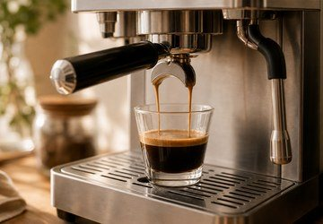
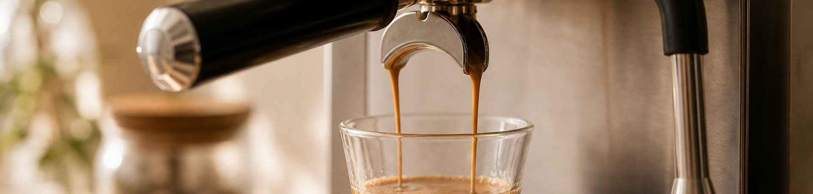
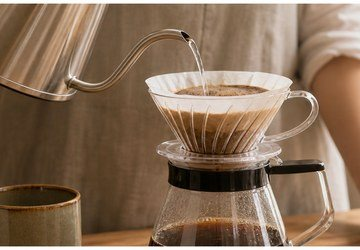
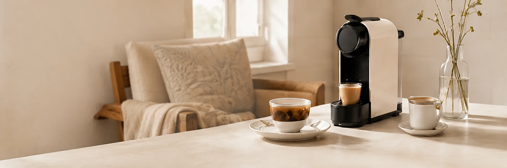
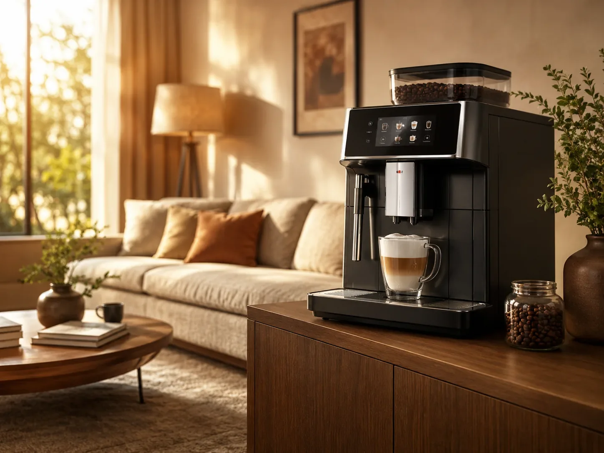

0
0
에스프레소
고압으로 짧은 시간 추출해 진한 풍미와 크레마를 만듭니다.
- 압력
- 9bar 내외
- 추출 시간
- 25~30초
- 특징
- 진하고 농축된 맛

커피는 같은 원두라도 추출 방식에 따라 전혀 다른 맛과 향을 만듭니다.
세 가지 대표적인 추출 방식을 이해해보세요.

고압으로 짧은 시간 추출해 진한 풍미와 크레마를 만듭니다.

중력을 이용해 천천히 추출하여 깨끗하고 섬세한 맛을 냅니다.

정량의 커피를 간편하게 추출하여 일정한 맛을 제공합니다.
아래 네 가지 요소의 균형이 맛의 차이를 만듭니다.
작은 변화만으로도 내 취향에 가까운 커피를 만들 수 있어요.
입자의 크기에 따라 물과 닿는 면적이 달라집니다.
곱게 ⇄ 굵게온도가 높을수록 성분이 더 많이 추출되어 맛의 영향을 줍니다.
88℃ ~ 96℃커피와 물의 비율이 농도와 바디감을 결정합니다.
1:14 ~ 1:18시간이 길수록 더 많은 성분이 추출되어 쓴맛이 강해집니다.
짧게 ⇄ 길게라이프스타일과 취향에 맞는 추출 방식을 선택해보세요.
COZYBREW가 당신의 커피 생활을 더 즐겁게 만들어 드립니다.
진함
편의성
추천진한 맛을 선호하는 분, 카페 스타일을 즐기는 분
어울리는 메뉴에스프레소, 아메리카노, 카페 라떼, 카푸치노
진함
편의성
추천섬세한 향과 깔끔한 맛을 즐기고 싶은 분
어울리는 메뉴핸드드립 커피, 싱글 오리진
진함
편의성
추천간편함과 빠른 추출을 원하는 분
어울리는 메뉴에스프레소, 아메리카노, 카페 라떼

진함
편의성
추천우유 기반 음료를 자주 즐기는 분
어울리는 메뉴카페 라떼, 플랫 화이트, 바닐라 라떼